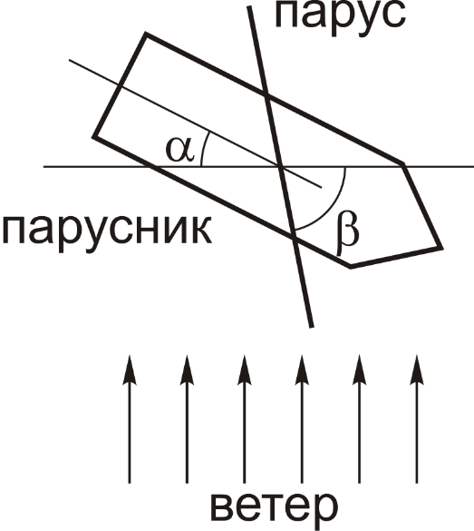

X18 (2018) — English translation
It is known that on a sailing ship you can move against the wind (zigzag). The average speed of a sailboat moving against the wind is called drift. Note: Assume the boat's speed to be negligible compared to the wind speed. Consider the sail to be flat and completely impervious to air, so that the incoming air stream transfers to the sail the entire component of its momentum normal to it. Consider that a sailboat can only move along the stern-bow line, while the force of water resistance is proportional to the speed.

Source: https://pho.rs/p/310